Map
HashMap 实现原理
- HashMap 使用数组+链表+红黑树（JDK 1.8 增加了红黑树部分）实现的；
- 链表长度大于 8（
TREEIFY_THRESHOLD）时，会把链表转换为红黑树； - 红黑树节点个数小于 6（
UNTREEIFY_THRESHOLD）时才转化为链表，防止频繁的转化。
解决 Hash 冲突的办法有哪些？HashMap 用的哪种？
解决 Hash 冲突方法有：开放定址法、再哈希法、链地址法。
HashMap 中采用的是链地址法 。
- 开放定址法
基本思想就是，如果p=H(key)出现冲突时，则以 p 为基础，再次hash， 即p1=H(p)。如果p1再次出现冲突，则以p1为基础，以此类推，直到找到一个不冲突的哈希地址pi 。因此，开放定址法所需要的hash表的长度要大于等于所需要存放的元素，而且因为存在再次hash，所以只能在删除的节点上做标记，而不能真正删除节点。- 再哈希法
提供多个不同的hash函数，当R1=H1(key1) 发生冲突时，再计算R2=H2(key1) ，直到没有冲突为止。 这样做虽然不易产生堆集，但增加了计算的时间。- 链地址法
将哈希值相同的元素构成一个同义词的单链表，并将单链表的头指针存放在哈希表的第 i 个单元中，查找、插入和删除主要在同义词链表中进行。链表法适用于经常进行插入和删除的情况。
*** 使用的 Hash 算法？
Hash 算法：取 key 的 hashCode 值、高位运算、取模运算。
// 第一步 取hashCode值
h=key.hashCode();
// 第二步 高位参与运算，减少冲突
h^(h>>>16);
// 第三步 取模运算
return h&(length-1);
在 JDK1.8 的实现中，优化了高位运算的算法，通过 hashCode() 的高16位异或低16位实现的：这么做可以在数组比较小的时候，也能保证考虑到高低位都参与到 Hash 的计算中，可以减少冲突，同时不会有太大的开销。
* HashMap 原理，java8 做的改变
从结构实现来讲，HashMap 是数组 + 链表 + 红黑树（JDK1.8 增加了红黑树部分）实现的。
HashMap 最多只允许一条记录的键为 null，允许多条记录的值为 null。
HashMap 非线程安全，ConcurrentHashMap 线程安全。
解决碰撞：
当出现冲突时，运用拉链法，将关键词为同义词的结点链接在一个单链表中。散列表长 m，则定义一个由 m 个头指针组成的指针数组 T，地址为 i 的结点插入以 T(i) 为头指针的单链表中。
Java8 中，冲突的元素超过限制（> 8 个），用红黑树替换链表。
为什么建议设置 HashMap 的容量？
HashMap 有扩容机制，就是当达到扩容条件时会进行扩容。扩容条件就是当 HashMap 中的元素个数超过临界值时就会自动扩容（threshold = loadFactor * capacity）。
如果我们没有设置初始容量大小，随着元素的不断增加，HashMap会发生多次扩容。而 HashMap 每次扩容都需要重建 hash 表，非常影响性能。
所以建议开发者在创建HashMap的时候指定初始化容量。
** HashMap的扩容过程？
1.8 扩容机制：
当元素个数大于 threshold 时，会进行扩容，使用 2 倍容量的数组代替原有数组。采用尾插入的方式将原数组元素拷贝到新数组。1.8 扩容之后链表元素相对位置没有变化，而 1.7 扩容之后链表元素会倒置。
1.7 链表新节点采用的是头插法，这样在线程扩容迁移元素时，会将元素顺序改变，导致两个线程中出现元素的相互指向而形成循环链表，1.8 采用了尾插法，避免了这种情况的发生。
元素顺序改变，是指链表元素的指向发生逆转，比如：a->b->c 顺序改变后成为 c->b->a
原数组的元素在重新计算 hash 之后，因为数组容量 n 变为 2 倍，那么 n-1 的 mask 范围在高位多 1bit。在元素拷贝过程不需要重新计算元素在数组中的位置，只需要看看原来的 hash 值新增的那个 bit 是 1 还是 0，是 0 的话索引没变，是 1 的话索引变成“原索引 + oldCap”（根据 <font style="color:#DF2A3F;">e.hash & oldCap == 0</font> 判断）。这样可以省去重新计算 hash 值的时间。而且，由于新增的 1bit 是 0 还是 1 可以认为是随机的，因此 resize 的过程会均匀的把之前的冲突的节点分散到新的 bucket。
头插法原理
- 三个元素：1、2、3
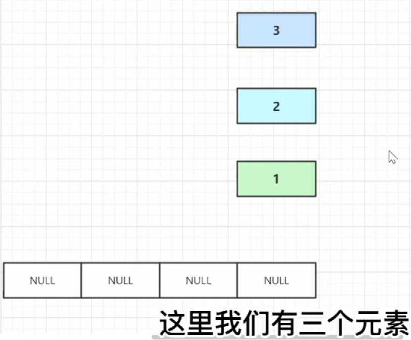
- 算出元素 1 的 hash 值
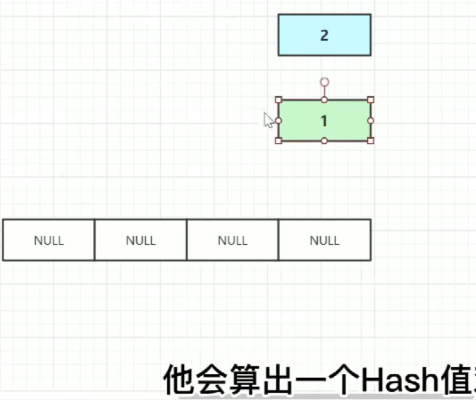
- 根据 1 的 hash 值得出数组下标，放到数组的指定位置

- 计算元素 2 的 hash 值，再通过 hash 值计算数组下标，发现 hash 碰撞

- 把元素 2 放在元素 1 的前面

- 元素 2 的 next 指向 元素 1，元素 2 就变成头节点

- 根据同样的方法计算元素 3 数组下标，出现 Hash 碰撞

- 元素 3 就会占据元素 2 的位置

- 头插法最终效果
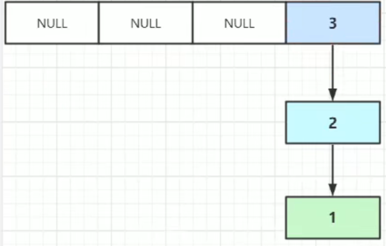
视频演示
原视频地址：https://www.bilibili.com/video/BV1n541177Ea
JDK7 的 HashMap 头插法循环的问题，这么难理解吗？.mp4
HashMap 的 put 方法流程？
基于 jdk1.8
- 如果 table 没有初始化就先进行初始化过程
- 使用 Hash 算法计算 key 的索引
- 判断索引处有没有存在元素，没有就直接插入
- 如果索引处存在元素，则遍历插入，有两种情况，一种是链表形式就直接遍历到尾端插入，一种是红黑树就按照红黑树结构插入
- 链表的数量大于阈值8，就要转换成红黑树的结构
- 添加成功后会检查是否需要扩容
HashMap 的长度为什么是 2 的幂次方？
Hash 值的范围值比较大，使用之前需要先对数组的长度取模运算，得到的余数才是元素存放的位置也就是对应的数组下标。这个数组下标的计算方法是(n - 1) & hash，n 代表数组长度。将 HashMap 的长度定为 2 的幂次方，这样就可以使用(n - 1) & hash位运算代替 % 取余的操作，提高性能。
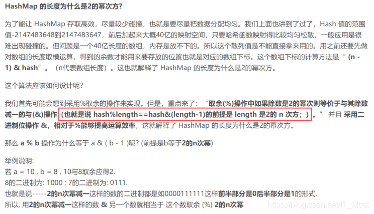
为什么 HashMap 默认加载因子是 0.75？
先看下HashMap的默认构造函数：
int threshold; // 容纳键值对的最大值
final float loadFactor; // 负载因子
int modCount;
int size;
Node[] table 的初始化长度 length 为 16，默认的 loadFactor 是 0.75，0.75 是对空间和时间效率的一个平衡选择，根据泊松分布，loadFactor 取 0.75 碰撞最小。一般不会修改，除非在时间和空间比较特殊的情况下 ：
如果内存空间很多而又对时间效率要求很高，可以降低负载因子 loadFactor 的值 。
如果内存空间紧张而又对时间效率要求不高，可以增加负载因子 loadFactor 的值，这个值可以大于 1。
一般用什么作为 HashMap 的 key ?
一般用 Integer、String 这种不可变类当 HashMap 当 key。String 类比较常用。
因为 String 是不可变的，所以在它创建的时候<u>hashCode</u>就被缓存了，不需要重新计算。这就是 HashMap 中的 key 经常使用字符串的原因。
获取对象的时候要用到 equals() 和 hashCode() 方法，而 Integer、String 这些类都已经重写了
hashCode() 以及 equals() 方法，不需要自己去重写这两个方法。
HashMap 为什么线程不安全？
- JDK1.7 多线程下扩容死循环。JDK1.7 中的 HashMap 使用头插法插入元素，在多线程的环境下，扩容的时候有可能导致环形链表的出现，形成死循环。
- 在 JDK1.8 中，在多线程环境下，会发生数据覆盖的情况。
HashMap 和 Hashtable 的区别？
HashMap 和 Hashtable 都实现了 Map 接口。
- HashMap 可以接受为 null 的 key 和 value，key 为 null 的键值对放在下标为 0 的头结点的链表中，而Hashtable 则不行。
- HashMap 是非线程安全的，Hashtable 是线程安全的。Jdk1.5提供了 ConcurrentHashMap，它是Hashtable 的替代。
- Hashtable 很多方法是同步方法，在单线程环境下它比 HashMap 要慢。
- 哈希值的使用不同，Hashtable 直接使用对象的 hashCode，而 HashMap 重新计算 hash 值。
LinkedHashMap 底层原理？
- HashMap 是无序的，迭代 HashMap 所得到元素的顺序并不是它们最初放到 HashMap 的顺序，即不能保持它们的插入顺序。
- LinkedHashMap 继承于 HashMap，是 HashMap 和 LinkedList 的融合体，具备两者的特性。LinkedHashMap 每次 put 操作都会将 entry 插入到双向链表的尾部。
讲一下TreeMap？
TreeMap 是一个能比较元素大小的 Map 集合，会对传入的 key 进行了大小排序。可以使用元素的自然顺序，也可以使用集合中自定义的比较器来进行排序。
public class TreeMap<K,V>
extends AbstractMap<K,V>
implements NavigableMap<K,V>, Cloneable, java.io.Serializable { }
TreeMap 的继承结构：

**TreeMap 的特点： **
- TreeMap 是有序的 key-value 集合，通过红黑树实现，根据键的自然顺序进行排序或根据提供的 Comparator 进行排序。
- TreeMap 继承了 AbstractMap，实现了 NavigableMap 接口，支持一系列的导航方法，给定具体搜索目标，可以返回最接近的匹配项。如
<u>floorEntry()</u>、<u>ceilingEntry()</u>分别返回小于等于、大于等于给定键关联的 Map.Entry 对象，不存在则返回 null。lowerKey()、floorKey、ceilingKey、higherKey() 只返回关联的key。
HashMap 为什么不是线程安全的（最好画图说明多线程环境下不安全）?
基于 jdk1.8
如果有两个线程 A 和 B，都进行插入数据，刚好这两条不同的数据经过哈希计算后得到的哈希码是一样的，且该位置还没有其他的数据。~~所以这两个线程都会进入我在上面标记为1的代码中。~~
假设一种情况，线程 A 通过 if 判断，该位置没有哈希冲突，进入了 if 语句，还没有进行数据插入。这时候 CPU 就把资源让给了线程 B，线程 A 停在了 if 语句里面，线程 B 判断该位置没有哈希冲突（线程 A 的数据还没插入），也进入了 if 语句。线程 B 执行完后，轮到线程 A 执行，现在线程 A 直接在该位置插入而不用再判断。
这时候，你会发现线程 A 把线程 B 插入的数据给覆盖了。发生了线程不安全情况。本来在 HashMap 中，发生哈希冲突是可以用链表法或者红黑树来解决的，但是在多线程中，可能就直接给覆盖了。
上面所说的是一个图来解释可能更加直观。如下面所示，两个线程在同一个位置添加数据，后面添加的数据就覆盖住了前面添加的。
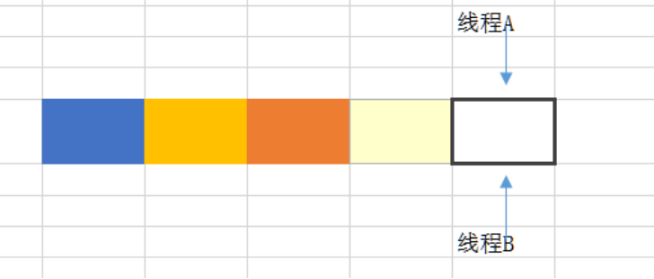
如果上述插入是插入到链表上，如两个线程都在遍历到最后一个节点，都要在最后添加一个数据，那么后面添加数据的线程就会把前面添加的数据给覆盖住。

在扩容的时候也可能会导致数据不一致，因为扩容是从一个数组拷贝到另外一个数组。
HashMap 的扩容过程
当向容器添加元素的时候，会判断当前容器的元素个数，如果大于等于阈值---即当前数组的长度乘以加载因子的值的时候，就要自动扩容。
扩容( resize )就是重新计算容量，向 HashMap 对象里不停的添加元素，而 HashMap 对象内部的数组无法装载更多的元素时，对象就需要扩大数组的长度，以便能装入更多的元素。当然 Java 里的数组是无法自动扩容的，方法是使用一个新的数组代替已有的容量小的数组，就像我们用一个小桶装水，如果想装更多的水，就得换大水桶。
HashMap hashMap=new HashMap(cap);
cap =3， HashMap 的容量为4；
cap =4， HashMap 的容量为4；
cap =5， HashMap 的容量为8；
cap =9， HashMap 的容量为16；
如果 cap 是 2 的 n 次方，则容量为 cap ，否则为大于 cap 的最小 2 的 n 次方的数。
HashMap 1.7 与 1.8 的 区别？说明 1.8 做了哪些优化？如何优化的？
HashMap结构图（jdk1.8）
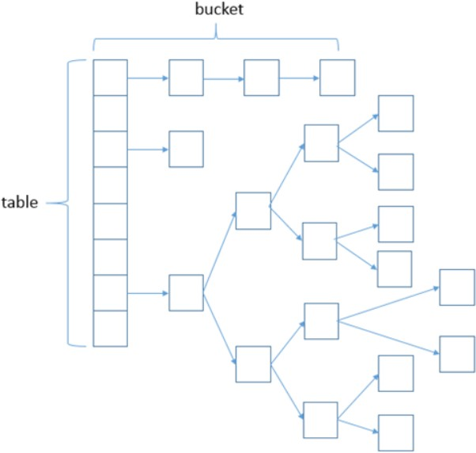
这就是 JDK7 与 JDK8 中 HashMap 实现的最大区别。
- 在 JDK1.7 及之前的版本中， HashMap 又叫散列链表：基于一个数组以及多个链表的实现，hash 值冲突的时候，就将对应节点以链表的形式存储。
- JDK1.8 中，当同一个 hash 值（ Table 上元素）的链表节点数大于 8 时，将不再以单链表的形式存储了，会被调整成一棵红黑树。
其下基于 JDK1.7.0_80 与 JDK1.8.0_66 做的分析：
JDK1.7 中
使用一个 Entry 数组来存储数据，用 key 的 hashcode 取模来决定 key 会被放到数组里的位置。
- 如果 hashcode 相同，或者 hashcode 取模后的结果相同（ hash collision，哈希冲突 ），那么这些 key 会被定位到 Entry 数组的同一个格子里，这些 key 会形成一个链表。
- 在 hashcode 特别差的情况下，比方说所有 key 的 hashcode 都相同，这个链表可能会很长，那么 put/get 操作都可能需要遍历这个链表，也就是说时间复杂度在最差情况下会退化到 O(n) 。
JDK1.8**中 **
使用一个 Node 数组来存储数据，但这个 Node 可能是链表结构，也可能是红黑树结构
- 如果插入的 key 的 hashcode 相同，那么这些 key 也会被定位到 Node 数组的同一个格子里。
- 如果同一个格子里的 key 不超过 8 个（≤8），使用链表结构存储。
- 如果超过了8个（＞8），那么会调用 treeifyBin 函数，将链表转换为红黑树。
- 那么即使 hashcode 完全相同，由于红黑树的特点，查找某个特定元素，也只需要 O(log n) 的开销，也就是说 put/get 的操作的时间复杂度最差只有 O(log n) 。
听起来挺不错，但是真正想要利用 JDK1.8 的好处，有一个限制：key 的对象，必须正确的实现了 Compare 接口。
如果没有实现 Compare 接口，或者实现得不正确（比方说所有 Compare 方法都返回 0），那 JDK1.8 的 HashMap 其实还是慢于 JDK1.7 的。
// String 实现了 Compare 接口
public final class String
implements java.io.Serializable, Comparable<String>, CharSequence {
//...
}
_简单的测试数据如下： _
_向 __HashMap __中 __put/get 1w __条 __hashcode __相同的对象 _
_JDK1.7: put 0.26s __， __get 0.55s _
_JDK1.8 （未实现 __Compare __接口）： __put 0.92s ， __get 2.1s _
_但是如果正确的实现了 Compare 接口，那么 JDK1.8 中的 HashMap 的性能有巨大提升，这次 put/get 100W条hashcode相同的对象 _
JDK1.8 （正确实现 Compare 接口，）： put/get 大概开销都在320 ms 左右
HashMap比较一个元素是先比较hash值，后用equals比较内容
HashMap 和 Hashtable 的区别
相同点:
- HashMap 和 Hashtable 都实现了 Map、Cloneable（可克隆）、Serializable（可序列化）这三个接口
不同点:
- 底层数据结构不同：jdk1.7 底层都是数组+链表，但 jdk1.8 HashMap 加入了红黑树
key 的 hash 值冲突时，会将冲突的 key 放到一个链表中，当数量 ＞8 时，会转化为红黑树
- Hashtable 是不允许键或值为 null 的，HashMap 的键值则都可以为 null。
- 添加 key-value 的 hash 值算法不同：HashMap 添加元素时，是使用自定义的哈希算法，而 Hashtable 是直接采用 key 的 hashCode()
- 实现方式不同：Hashtable 继承的是 Dictionary 类，而 HashMap 继承的是 AbstractMap 类。
- 初始化容量不同：HashMap 的初始容量为：16，Hashtable 初始容量为：11，两者的负载因子默认都是：0.75。
- 扩容机制不同：当已用容量 > 总容量 * 负载因子时，HashMap 扩容规则为当前容量翻倍，Hashtable 扩容规则为当前容量翻倍 + 1。
- 支持的遍历种类不同：HashMap 只支持 Iterator 遍历，而 Hashtable 支持 Iterator 和 Enumeration 两种方式遍历。
- 迭代器不同：HashMap 的迭代器（Iterator）是 fail-fast 迭代器，而 Hashtable 的 Enumerator 迭代器不是 fail-fast 的。所以当有其它线程改变了 HashMap 的结构（增加或者移除元素），将会抛出 ConcurrentModificationException，但迭代器本身的 remove() 方法移除元素则不会抛出ConcurrentModificationException 异常。但这并不是一个一定发生的行为，要看JVM。而 Hashtable 则不会。
- 部分API不同：HashMap 不支持 contains(Object value) 方法，没有重写 toString() 方法。而 Hashtable 支持 contains(Object value) 方法，而且重写了 toString() 方法
- 同步性不同: Hashtable 是同步(synchronized)的，适用于多线程环境。而 HashMap 不是同步的，适用于单线程环境。多个线程可以共享一个 Hashtable；而如果没有正确的同步的话，多个线程是不能共享 HashMap 的。
由于 Hashtable 是线程安全的也是 synchronized，所以在单线程环境下它比 HashMap 要慢。如果你不需要同步，只需要单一线程，那么使用HashMap性能要好过Hashtable。
HashMap和Hashtable的区别(绝对经典)_棉花糖one.的博客-CSDN博客_hashmap和hashtable的区别
JDK7 与 JDK8 中HashMap的实现
JDK8 在 JDK7 的基础上引入了红黑树-b，因为链表过长，会导致效率很低，将原来链表数组的每一个链表分成奇偶两个子链表分别挂在新链表数组的散列位置，这样就减少了每个链表的长度，增加查找效率
HashMap 的底层源码
- 在 JDK1.6，JDK1.7 中，HashMap 采用位桶+链表实现，即使用链表处理冲突，同一 hash 值的链表都存储在一个链表里。但是当位于一个桶中的元素较多，即 hash 值相等的元素较多时，通过 key 值依次查找的效率较低。
- 而 JDK1.8 中，HashMap 采用位桶+链表+红黑树实现，当链表长度超过阈值（8）时，将链表转换为红黑树，这样大大减少了查找时间。
JDK1.8 HashMap的实现原理：
首先有一个每个元素都是链表（可能表述不准确）的数组，当添加一个元素（key-value）时，就首先计算元素 key 的 hash 值，以此确定插入数组中的位置。但是可能存在同一 hash 值的元素已经被放在数组同一位置了，这时就添加到同一 hash 值的元素的后面，他们在数组的同一位置，形成了链表。
同一各链表上的Hash值是相同的，所以，数组存放的是链表。而当链表长度太长时，链表就转换为红黑树，这样大大提高了查找的效率。
当链表数组的容量超过初始容量的 0.75 倍时，再散列将链表数组扩大 2 倍，把原链表数组的搬移到新的数组中。
原理图：
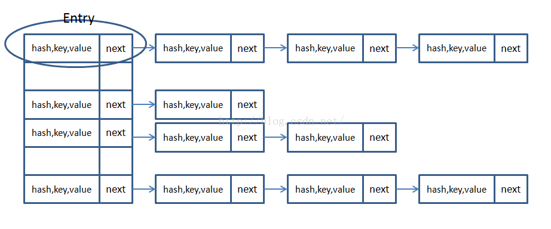
HashMap 的 get(key) 方法是获取 key 的 hash 值，计算hash&(n-1)得到在链表数组中的位置first=tab[hash&(n-1)]，先判断 first 的 key 是否与参数 key 相等，不相等就遍历后面的链表找到相同的 key 值返回对应的 Value 值即可。
HashMap 的 put(key) 方法是判断键值对数组tab[]是否为空或为null，否则以默认大小 resize()；根据键值 key 计算 hash 值得到插入的数组索引 i，如果tab[i]==null，直接新建节点添加，否则判断当前数组中处理Hash 冲突的方式为链表还是红黑树（check 第一个节点类型即可），分别处理。
构造 hash 表时，如果不指明初始大小，默认大小为16（即 Node 数组大小 16），如果Node[]数组中的元素达到（填充比 * Node.length）重新调整 HashMap 大小，变为原来 2 倍大小，扩容很耗时。
为什么 HashMap 是线程不安全的？
在某一时刻同时操作 HashMap 并执行 put 操作，而有大于 2 个 key 的 hash 值相同，如图中 A1、A2，这个时候需要解决碰撞冲突，而解决冲突的办法上面已经说过，对于链表的结构在这里不再赘述，暂且不讨论是从链表头部插入还是从尾部初入，这个时候两个线程如果恰好都取到了对应位置的头结点L1，而最终的结果可想而知，A1、A2两个数据中势必会有一个会丢失。

当多个线程同时检测到总数量超过门限值的时候就会同时调用 resize 操作，各自生成新的数组并 rehash 后赋给该 map 底层的数组 table，结果最终只有最后一个线程生成的新数组被赋给 table 变量，其他线程的均会丢失。而且，当某些线程已经完成赋值而其他线程刚开始的时候，就会用已经被赋值的table作为原始数组，这样也会有问题。
多并发情况下 HashMap 是否还会产生死循环
不会，jdk1.8 版本以后已经没有这个问题了，没有 transfer 这个函数了，也就没有了 do while 可能造成的死循环，对原有造成死锁的关键原因点——新 table 复制在头端添加元素，改进为依次在末端添加新的元素
TreeMap、HashMap、LindedHashMap 的区别
- LinkedHashMap 可以保证 HashMap 集合有序，存入的顺序和取出的顺序一致。
- TreeMap 实现 SortMap 接口，能够把它保存的记录根据键排序，默认是按键值的升序排序，也可以指定排序的比较器。当用 Iterator 遍历TreeMap时，得到的记录是排过序的。
- HashMap 不保证顺序，即为无序的，具有很快的访问速度。
HashMap 最多只允许一条记录的键为 null；
允许多条记录的值为 null；
HashMap 不支持线程的同步。
HashMap 和 Hashtable 的区别
- HashMap 去掉了 Hashtable 的
<u>contains()</u>方法，但是，加上了<u>containsValue()</u>和<u>containsKey()</u>方法。 - Hashtable 同步的，而 HashMap 是非同步的，效率上比 Hashtable 要高。
- HashMap 允许空键值，而 Hashtable 不允许。
注意：
- TreeMap：非线程安全，基于红黑树实现。TreeMap 没有调优选项，因为该树总处于平衡状态。
- TreeMap：适用于按自然顺序或自定义顺序遍历键（key）。
自定义顺序遍历键，个人理解是通过keySet()获取所有键，再将键排序后遍历。
java 常用集合list与Set、Map区别及适用场景总结_安卓之夜的博客-CSDN博客_list map set区别
HashSet 和 HashMap 区别
- Set 是线性结构，Set 中的值不能重复。
HashSet 是 Set 的 hash 实现；HashSet 中值不能重复；HashSet 是用 HashMap 的 key 来实现的。 - Map 是键值对映射，可以空键空值。
HashMap 是 Map 接口的 hash 实现；key 的唯一性是通过 key 的 hash 值比较和 equals() 方法比较来确定，value值是则是链表结构。
HashMap 和 Hashtable 的不同点
- 继承和实现方式不同
- HashMap 继承于 AbstractMap，实现了 Map、Cloneable、java.io.Serializable 接口。
- Hashtable 继承于 Dictionary，实现了 Map、Cloneable、java.io.Serializable 接口。
- 线程安全不同
- Hashtable 它是线程安全的，支持多线程。
- 而 HashMap 它不是线程安全的。
- 对 null 值的处理不同
- HashMap 的 key、value 都可以为null。
- Hashtable 的key、value 都不可以为null。
- 支持的遍历种类不同
- HashMap 只支持 Iterator（迭代器）遍历。
- 而 Hashtable支持 Iterator（迭代器）和 Enumeration（枚举器）两种方式遍历。
- 通过 Iterator 迭代器遍历时，遍历的顺序不同
- HashMap 是“从前向后”的遍历数组；再对数组具体某一项对应的链表，从表头开始进行遍历。
- Hashtable 是“从后往前”的遍历数组；再对数组具体某一项对应的链表，从表头开始进行遍历。
- 容量的初始值 和 增加方式都不一样
- HashMap默认的容量大小是16；增加容量时，每次将容量变为“原始容量 × 2”。
- Hashtable默认的容量大小是11；增加容量时，每次将容量变为“原始容量 x 2 + 1”。
- 添加 key-value 时的 hash 值算法不同
- HashMap 添加元素时，是使用自定义的哈希算法。
- Hashtable 没有自定义哈希算法，而直接采用的 key 的 hashCode()。
- 部分API不同
- Hashtable 支持 contains(Object value) 方法，而且重写了 toString() 方法；
- 而 HashMap 不支持 contains(Object value) 方法，没有重写 toString() 方法。
HashMap 的原理，内部数据结构？
底层使用哈希表（数组 + 链表），当链表过长（大于8）会将链表转成红黑树以实现 O(logn) 时间复杂度内查找
讲一下 HashMap 中 put 方法过程？
- 对 Key 求 Hash 值，然后再计算下标。🔗
- 如果没有碰撞，直接放入桶中，
- 如果碰撞了，以链表的方式链接到后面，
- 如果链表长度超过阈值（TREEIFY_THRESHOLD == 8），就把链表转成红黑树（jdk1.8）。
- 如果节点已经存在就替换旧值
- 如果桶满了（容量 * 加载因子），就需要 resize。🔗
HashMap 中 Hash 函数怎么实现的？ 还有哪些 Hash 的实现方式？
- 高 16bit 不变，低 16bit 和高 16bit 做了一个异或
(n - 1) & hash--> 得到下标 - 还有哪些 Hash 实现方式：
- 直接定址法：直接以关键字k或者k加上某个常数（k+c）作为哈希地址。
- 数字分析法：提取关键字中取值比较均匀的数字作为哈希地址。
- 除留余数法：用关键字k除以某个不大于哈希表长度m的数p，将所得余数作为哈希表地址。
- 分段叠加法：按照哈希表地址位数将关键字分成位数相等的几部分，其中最后一部分可以比较短。然后将这几部分相加，舍弃最高进位后的结果就是该关键字的哈希地址。
- 平方取中法：如果关键字各个部分分布都不均匀的话，可以先求出它的平方值，然后按照需求取中间的几位作为哈希地址。
- 伪随机数法：采用一个伪随机数当作哈希函数。
HashMap 怎样解决冲突，讲一下扩容过程
将新节点加到链表后，如果容量查过阈值（当前数组的长度乘以加载因子），容量扩充为原来的两倍，然后对每个节点重新计算哈希值。
抛开 HashMap，hash 冲突有那些解决办法？
- 开放定址
- 链地址法
针对 HashMap 中某个 Entry 链太长，查找的时间复杂度可能达到 O(n)，怎么优化？
将链表转为红黑树， JDK1.8 已经实现了。
对 HashMap 的了解
- 数组 + 红黑树 + 链表方式存储
- 默认容量： 16（2^n 为宜,若定义的初始容量不是 2^n，容量会定义为大于该初始容量的最小 2^n）
例如：初始容量为 13，则真正的容量是 16. - put 操作
- 索引计算 :
((key.hashCode() ^ (key.hashCode() >>> 16)) & (table.length - 1)) - 在链表中查找，并记录链表长度，若链表长度大于 TREEIFY_THRESHOLD(值为 8)，则将该链转成 红黑树。
- 若在链表中找到了，则替换旧值，若未找到则继续
- 当总元素个数超过容量 * 加载因子时，扩容为原来 2 倍并重新散列
(元素的下标要么不变，要么变为【原下标+原容量】)。 - 将新元素加到链表尾部
- 索引计算 :
- 线程不安全
HashMap 和 Hashtable 区别
- 默认容量不同，HashMap：16，Hashtable：11。
- 索引计算方式不同。
- HashMap 特有的将过长（链表长度 > 8）链表转换为红黑树。
- 扩容机制不同，HashMap：2^n，Hashtable：2^n + 1，所以新元素的位置不同。
- 线程安全性不同，HashMap 线程不安全， Hashtable 线程安全。
TreeMap 和 TreeSet 区别和实现原理
- TreeSet 底层是 TreeMap，TreeMap 是基于数组+红黑树+链表来实现的。
- TreeSet 是单值集合，TreeMap 是键值对集合
HashMap 如何实现的？
jdk1.7 哈希表由数组+链表组成的；
jdk1.8 哈希表是由数组+链表+红黑树组成的；
解决Hash冲突的方法：拉链法，我们可以理解为“链表的数组”
HashMap 和 Hashtable 区别，Hashtable 线程安全吗？
HashMap 是 Hashtable 的轻量级实现（非线程安全的实现），他们都完成了Map接口。
主要区别：
- HashMap 允许空（null）键值（key）,由于非线程安全，效率上可能高于 Hashtable。
- HashMap 允许将 null 作为一个 entry 的 key 或者 value，而 Hashtable 不允许。
- HashMap 把 Hashtable 的 contains 方法去掉了，改成 containsvalue 和 containsKey。因为 contains 方法容易让人引起误解。
- Hashtable 继承自 Dictionary 类，而 HashMap 是 Java1.2 引进的 Map interface 的一个实现。
- 最大的不同是，Hashtable 的方法是 synchronize 的，而 HashMap 不是，在多个线程访问 Hashtable 时，不需要自己为它的方法实现同步，而 HashMap 就必须为之提供外同步。
- Hashtable 和 HashMap 采用的 hash/reHash 算法都大概一样，所以性能不会有很大的差。
在什么情景下应用过 TreeMap？TreeMap 内部怎么实现的？
- TreeMap 是一个有序的 key-value 集合。
- TreeMap 继承于 AbstractMap，所以它是一个 Map，即一个 key-value 集合。
- TreeMap 实现了 NavigableMap 接口，意味着它支持一系列的导航方法。比如返回有序的 key 集合。
- TreeMap 实现了 Cloneable 接口，意味着它能被克隆。
- TreeMap 实现了 java.io.Serializable 接口，意味着它支持序列化。
- TreeMap 基于红黑树（Red-Black tree）实现。
- 该映射根据其键的自然顺序进行排序，或者根据创建映射时提供的 Comparator 进行排序，具体取决于使用的构造方法。
- TreeMap 的基本操作 containsKey、get、put 和 remove 的时间复杂度是 log(n) 。
- TreeMap是非同步的。
- 它的 iterator 方法返回的迭代器是 fail-fast 的。
HashMap 中是否任何对象都可以作为 key？用户自定义对象作为 key 有没有什么要求？
是，用户自定义的类实例对象作为 key，需要重写 hashCode() 和 equals()，最好为不可变类，否则会重新计算 hash。
一个 Java 对象作为 Map 的 Key 时需要满足的前提条件是什么？
需要重载 equals() 及 hashCode() 方法。
如果集合中 key 值是自己定义的类，HashMap 该怎么处理？
使用 HashMap，如果 key 是自定义的类，就必须重写 hashcode() 和 equals()。
LinkedHashMap 的应用
基于 LinkedHashMap 的访问顺序的特点，可构造一个 LRU（Least Recently Used，最近最少使用） 简单缓存。
也有一些开源的缓存产品如 ehcache 的淘汰策略（ LRU ）就是在 LinkedHashMap 上扩展的。
jdk1.7 到 jdk1.8 HashMap 发生了什么变化?
1.8 之后 HashMap 的数据结构发生了变化，从之前的单纯的数组 + 链表结构 变成 数组 + 链表 + 红黑树。也就是说在 JVM 存储 HashMap 的 K-V 时仅仅通过 key 来决定每一个 entry 的存储槽位（Node[] 中的 index）。并且 Value 以链表的形式挂在到对应槽位上（1.8 以后如果 value 长度大于 8 则转为红黑树）。
但是 HashMap 1.7 跟 1.8 中都没有任何同步操作，容易出现并发问题，甚至出现死循环，导致系统不可用。解决方案是 jdk 的 ConcurrentHashMap，位于 java.util.concurrent 下，专门解决并发问题。
HashMap 如何解决 Hash 冲突
通过引入单向链表来解决 Hash 冲突。当出现 Hash 冲突时，比较新老 key 值是否相等，如果相等，新值覆盖旧值。如果不相等，新值会存入新的 Node 结点，指向老节点，形成链式结构，即链表。
当 Hash 冲突发生频繁的时候，会导致链表长度过长，以致检索效率低，所以 JDK1.8 之后引入了红黑树，当链表长度大于 8 时，链表会转换成红黑书，以此提高查询性能。
HashMap之Hash碰撞冲突解决方案及未来改进_qedgbmwyz的博客-CSDN博客
- 树化阈值为 8
static final int TREEIFY_THRESHOLD = 8;
- 最小树化容量值为 64
static final int MIN_TREEIFY_CAPACITY = 64;链表转化为红黑树需要满足 2 个条件：
- 链表的节点数量（包括新增节点）大于等于树化阈值(查看源码可知，putVal 方法是大于树化阈值，而其他方法是大于等于树化阈值)。
- Node 数组的长度大于等于最小树化容量值。
HashMap 的底层原理（包括底层数据结构，怎么扩容的）
基于 jdk1.7
- 数据结构中有数组和链表来实现对数据的存储，综合两者的特性，做出了⼀种寻址容易，插⼊删除也容易的数据结构——哈希表。哈希表（(Hash table）既满⾜了数据的查找⽅便，同时不占⽤太多的内容空间，使⽤也⼗分⽅便。
- HashMap 底层是采⽤数组来维护的 Map.Entry 静态内部实现类
/**
* The table, resized as necessary. Length MUST Always be a power of two.
*/
transient Entry[] table;
static class Entry<K,V> implements Map.Entry<K,V> {
final K key;
V value;
Entry<K,V> next;
final int hash;
……
}
- HashMap 添加元素：
首先会调用 key1 所在类的 hashCode() 方法计算 key1 的哈希值，然后通过某种算法计算出 key1 在 Entry 数组中的存放位置。- 如果此位置上没有存放数据，则（key1-value1）添加成功。
- 如果此位置上有数据，则比较 key1 和已经存放的数据（一个或多个数据，其中多个数据是以链表的形式存储）的 key 的哈希值。
- 如果 key1 的哈希值和已经存放的数据的 key 的哈希值都不相同，则（key1-value1）添加成功。
- 如果 key1 的哈希值和已经存放的某一个数据（key2-value2）的哈希值相同，则调用 key1 所在类的 equals(key2) 方法：
- 如果 equals 返回 false，则（key1-value1）添加成功。
- 如果 equals 返回 true,则使用 value1 替换 value2。
LinkedHashMap 排序原理
public LinkedHashMap() {
// 调⽤HashMap的构造⽅方法，其实就是初始化Entry[] table
super();
// 这里是指是否基于访问排序，默认为false
accessOrder = false;
}
- LinkedHashMap 存储数据是有序的，⽽且分为两种：插⼊顺序和访问顺序，默认为插入顺序。
- LinkedHashMap 有⾃己的静态内部类 Entry，它继承了 HashMap.Entry，定义如下:
/**
* LinkedHashMap entry.
*/
private static class Entry<K,V> extends HashMap.Entry<K,V> {
// These fields comprise the doubly linked list used for iteration.
Entry<K,V> before, after;
Entry(int hash, K key, V value, HashMap.Entry<K,V> next) {
super(hash, key, value, next);
}
}
- 所以 LinkedHashMap 构造函数，主要就是调⽤ HashMap 的构造函数初始化了⼀个
Entry[] table，然后调⽤⾃身的 init 初始化了⼀个只有头结点的双向链表。
谈谈数据结构，比如 TreeMap
- TreeMap 底层结构为红黑树
- 红黑树的 Node 排序是根据 Key 进行比较
- 每次新增删除节点，都可能导致红黑树的重排
- 红黑树中不支持两个或以上的 Node 节点对应红黑值相等
说一下你对HashMap的理解？put操作的流程大概是怎样的呢？
HashMap 的数据结构在 jdk1.8 之前是数组+链表，为了解决数据量过大、链表过长是查询效率会降低的问题变成了数组+链表+红黑树的结构，利用的是红黑树自平衡的特点。
链表的平均查找时间复杂度是 O(n)，红黑树是 O(log(n))。
HashMap 中的 put 方法执行过程大体如下：
- 判断键值对数组 table[] 是否为空（null）或者 length=0，是的话就执行 resize() 方法进行扩容。
- 如果 table[] 不为空且 length>0，就根据键值 key 计算 hash 值，根据算法得到插入的数组索引 i。
- 判断 table[i]==null，如果是true，直接新建节点进行添加，如果是false，判断 table[i] 的首个元素是否和 key 一样（equals 方法），一样就直接覆盖。
- 判断 table[i] 是否为 treenode，即判断是否是红黑树，如果是红黑树，直接在树中插入键值对。
- 如果不是 treenode，开始遍历链表，判断链表长度是否大于 8，如果大于 8 就转成红黑树，在树中执行插入操作，如果不大于 8，就在链表中执行插入；在遍历过程中判断 key 是否存在，存在就直接覆盖对应的 value 值。
- 插入成功后，就需要判断实际存在的键值对数量 size 是否超过了最大容量 threshold，如果超过了，执行 resize 方法进行扩容。
自定义类型可以作为Key么？
可以，需要覆盖Object类的equals()方法和hashCode()方法
集合框架 HashMap 的扩容机制
- 当添加某个元素后，数组的总的添加元素数大于数组长度 * 0.75（默认,也可自己设定），数组长度扩容为两倍。
比如，开始创建HashMap集合后，数组长度为16，临界值为16 * 0.75 = 12，当加入元素后元素个数超过12，数组长度扩容为 32，临界值变为 24 - 在没有红黑树的条件下，添加元素后数组中某个链表的长度超过了8，数组会扩容为两倍，该链表会转换为红黑树。
比如，开始创建HashMap集合后，数组长度为16，假设添加的元素都在一个链表中，当链表中元素为8时，再往链表中添加一个元素，此时，若数组中不存在红黑树，则数组会扩容为两倍变成32（16*2）。假设此时链表元素排列不变，再在该链表中添加一个元素，数组长度再扩容两倍，变为64，假设此时链表元素排列还是不变，则此时链表中存在10个元素，这是HashMap链表元素数存在的最大值。此时，再加入元素，满足了链表树化的两个条件：
①数组长度达到64；
②该链表长度达到了8。
HashMap和TreeMap的区别
不同点：
- HashMap是通过hash code对其内容进行快速查找的；HashMap中的元素是没有顺序的；
TreeMap中所有的元素都是有某一固定顺序的，如果需要得到一个有序的结果，就应该使用TreeMap； - HashMap继承AbstractMap类；覆盖了hashcode() 和equals() 方法，以确保两个相等的映射返回相同的哈希值；
TreeMap继承SortedMap类；他保持键的有序顺序； - HashMap：基于hash表实现的；使用HashMap要求添加的键类明确定义了hashcode() 和equals() （可以重写该方法）；为了优化HashMap的空间使用，可以调优初始容量和负载因子；
TreeMap：基于红黑树实现的；TreeMap就没有调优选项，因为红黑树总是处于平衡的状态； - HashMap：适用于Map插入，删除，定位元素；
TreeMap：适用于按自然顺序或自定义顺序遍历键（key）；
相同点：
- HashMap和TreeMap都不是线程安全的；
- 都间接实现了Map接口。
HashMap 和 Hashtable 有什么区别？
- HashMap是非线程安全的，HashTable是线程安全的。
- HashMap的键和值都允许有null值存在，而HashTable则不行。
- HashMap不是线程安全的，Hashtable是线程安全的。
- Hashtable是同步的，而HashMap不是。因此，HashMap更适合于单线程环境，而Hashtable适合于多线程环境。
- 因为线程安全的问题，HashMap效率比HashTable的要高。
一般现在不建议用 HashTable。原因有二：
- 是HashTable是遗留类，内部实现很多没优化和冗余。
- 即使在多线程环境下，现在也有同步的 ConcurrentHashMap 替代，没有必要因为是多线程而用HashTable
HashMap和Hashtable有什么区别？_天幕顽主的博客-CSDN博客_hashmap和hashtable有什么区别
HashMap之Hash碰撞
碰撞的意思是计算得到的Hash值相同，需要放到同一个bucket中。
Hashmap里面的bucket出现了单链表的形式，散列表要解决的一个问题就是散列值的冲突问题，通常是两种方法：链表法和开放地址法。
- 链表法就是将相同hash值的对象组织成一个链表放在hash值对应的槽位；
- 开放地址法是通过一个探测算法，当某个槽位已经被占据的情况下继续查找下一个可以使用的槽位。
链表法
HashMap采用的链表法的方式，链表是单向链表。形成单链表的核心代码如下：
void addEntry(int hash, K key, V value, int bucketIndex) {
Entry<K,V> e = table[bucketIndex];
table[bucketIndex] = new Entry<K,V>(hash, key, value, e);
if (size++ >= threshold)
resize(2 * table.length);
}
上面方法的代码很简单，但其中包含了一个设计：
系统总是将新添加的 Entry 对象放入 table 数组的 bucket Index 索引处——如果 bucketIndex 索引处已经有了一个 Entry 对象，那么，新添加的 Entry 对象指向原有的 Entry 对象(产生一个 Entry 链)。如果 bucketIndex 索引处没有 Entry 对象，也就是上面程序代码的 e 变量是 null，也就是新放入的 Entry 对象指向 null，也就是没有产生 Entry 链。
如果两个 Entry的 key的 hashCode() 返回值相同，那它们的存储位置相同。如果这两个 Entry的 key通过equals比较返回 true，新添加 Entry的 value将覆盖集合中原有 Entry的 value，但key不会覆盖。如果这两个 Entry的 key通过equals比较返回 false，新添加的 Entry将与集合中原有 Entry形成 Entry链，而且新添加的 Entry位于 Entry链的头部。
HashMap里面没有出现hash冲突时，没有形成单链表时，HashMap查找元素很快，get()方法能够直接定位到元素，但是出现单链表后，单个 bucket 里存储的不是一个 Entry，而是一个 Entry 链，系统只能必须按顺序遍历每个 Entry，直到找到想搜索的 Entry 为止。如果恰好要搜索的 Entry 位于该 Entry 链的最末端(该 Entry 是最早放入该 bucket 中)，那系统必须循环到最后才能找到该元素。
jdk1.8 采用尾插法，jdk1.7采用头插法。
通过上面可知如果多个hashCode()的值落到同一个桶内的时候，这些值是存储到一个链表中的。最坏的情况下，所有的key都映射到同一个桶中，这样HashMap就退化成了一个链表——查找时间从O(1)到O(n)。也就是说我们是通过链表的方式来解决这个Hash碰撞问题的。
开放地址法
当冲突发生时，使用某种探查技术在散列表中形成一个探查(测)序列。沿此序列逐个单元地查找，直到找到给定的地址。
按照形成探查序列的方法不同，可将开放定址法区分为线性探查法、二次探查法、双重散列法等。
下面给一个线性探查法的例子
问题：已知一组关键字为(26，36，41，38，44，15，68，12，06，51)，用除余法构造散列函数，用线性探查法解决冲突构造这组关键字的散列表。
解答：为了减少冲突，通常令装填因子α由除余法因子是13的散列函数计算出的上述关键字序列的散列地址为(0，10，2，12，5，2，3，12，6，12)。
前5个关键字插入时，其相应的地址均为开放地址，故将它们直接插入T[0]，T[10)，T[2]，T[12]和T[5]中。
当插入第6个关键字15时，其散列地址2(即h(15)=15％13=2)已被关键字41(15和41互为同义词)占用。故探查h1=(2+1)％13=3，此地址开放，所以将15放入T[3]中。
当插入第7个关键字68时，其散列地址3已被非同义词15先占用，故将其插入到T[4]中。
当插入第8个关键字12时，散列地址12已被同义词38占用，故探查hl=(12+1)％13=0，而T[0]亦被26占用，再探查h2=(12+2)％13=1，此地址开放，可将12插入其中。
类似地，第9个关键字06直接插入T[6]中；而最后一个关键字51插人时，因探查的地址12，0，1，…，6均非空，故51插入T[7]中。
二次探查法：如果发生冲突，那么记下这个冲突的位置为index，然后在加上固定步长，即index+step，找到这个位置，看一下是否仍然冲突，如果继续冲突，那么按照这个思路，继续加上固定步长
Hash碰撞性能分析
Java 7：随着HashMap的大小的增长，get()方法的开销也越来越大。由于所有的记录都在同一个桶里的超长链表内，平均查询一条记录就需要遍历一半的列表。
Java 8对此进行了优化！它是一个log的曲线，因此它的性能要好上好几个数量级。尽管有严重的哈希碰撞，已是最坏的情况了，但这个同样的基准测试在JDK8中的时间复杂度是O(logn)，单独来看JDK 8的曲线的话会更清楚，这是一个对数线性分布。
Java8碰撞优化提升
如果某个桶中的记录过大的话（当前是TREEIFY_THRESHOLD = 8），HashMap会动态的使用一个专门的treemap实现来替换掉它。这样做的结果会更好，时间复杂度是O(logn)，而不是糟糕的O(n)。
面试必问系列：2、说一下你对Map的理解_青天大脑爷的博客-CSDN博客_对map的理解
拉链法导致的链表过深问题为什么不用二叉查找树代替而选择红黑树？为什么不一直使用红黑树？
之所以选择红黑树是为了解决二叉查找树的缺陷，二叉查找树在特殊情况下会变成一条线性结构（这就跟原来使用链表结构一样了，造成很深的问题），遍历查找会非常慢。而红黑树在插入新数据后可能需要通过左旋，右旋、变色这些操作来保持平衡，引入红黑树就是为了查找数据快，解决链表查询深度的问题。我们知道红黑树属于平衡二叉树，但是为了保持“平衡”是需要付出代价的，但是该代价所损耗的资源要比遍历线性链表要少。所以，当长度大于8的时候，会使用红黑树，链表长度低于6，就把红黑树转回链表，因为根本不需要引入红黑树，引入反而会慢。
如何提升HashMap插入性能？
前面产生冲突的那些KEY对应的记录只是简单的追加到一个链表后面，这些记录只能通过遍历来进行查找。但是超过这个阈值后HashMap开始将列表升级成一个红黑树，使用哈希值作为树的分支变量，如果两个哈希值不等，但指向同一个桶的话，较大的那个会插入到右子树里。如果哈希值相等，HashMap希望key值最好是实现了Comparable接口的，这样它可以按照顺序来进行插入。这对HashMap的key来说并不是必须的，不过如果实现了当然最好。
如果没有实现Comparable接口，在出现严重的哈希碰撞的时候，你就并别指望能获得性能提升了。这个性能提升有什么用处？
比方说，如果恶意的程序知道我们用的是哈希算法，它可能会发送大量的请求，导致产生严重的哈希碰撞。然后不停的访问这些key就能显著的影响服务器的性能，这样就形成了一次拒绝服务攻击（DoS）。JDK 8中从O(n)到O(logn)的飞跃，可以有效地防止类似的攻击，同时也让HashMap性能的可预测性稍微增强了一些。
HashMap和Hashtable的区别？HashMap中的key可以是任何对象或数据类型吗？Hashtable是线程安全的么？
- HashMap和Hashtable的区别
- Hashtable的方法是同步的，HashMap未经同步，所以在多线程场合要手动同步HashMap这个区别就像Vector和 ArrayList一样。
- Hashtable不允许 null 值(key 和value 都不可以)，HashMap允许 null 值(key和value都可以)。
- 两者的遍历方式大同小异，Hashtable仅仅比HashMap多一个elements方法。
- Hashtable 和HashMap 都能通过values()方法返回一个 Collection ，然后进行遍历处理。两者也都可以通过entrySet() 方法返回一个 Set ， 然后进行遍历处理。
- Hashtable使用Enumeration，HashMap使用Iterator。
- 哈希值的使用不同，Hashtable直接使用对象的hashCode。而HashMap重新计算hash值，而且用于代替求模。
- Hashtable中hash数组默认大小是11，增加的方式是 old*2+1。HashMap中hash数组的默认大小是16，而且一定是2的指数。
- Hashtable基于Dictionary类，而HashMap基于AbstractMap类
• HashMap中的key可以是任何对象或数据类型吗？
- 可以为null，但不能是可变对象，如果是可变对象的话，对象中的属性改变，则对象HashCode也进行相应的改变，导致下次无法查找到已存在Map中的数据。
- 如果可变对象在HashMap中被用作键，那就要小心在改变对象状态的时候，不要改变它的哈希值了。我们只需要保证成员变量的改变能保证该对象的哈希值不变即可。
• Hashtable是线程安全的么？
Hashtable是线程安全的，其实现是在对应的方法上添加了synchronized关键字进行修饰，由于在执行此方法的时候需要获得对象锁，则执行起来比较慢。所以现在如果为了保证线程安全的话，使用CurrentHasxhMap。
Java 中 HashMap 和 Hashtable 的区别（乐视、⼩⽶）
ArrayMap VS HashMap
用过哪些Map类，都有什么区别？
HashMap是线程安全的吗？
不是
并发下使用的Map是什么？他们内部原理分别是什么？比如存储方式，hash code，扩容，默认容量等
1. ConcurrentHashMap 特性
ConcurrentHashMap 是线程安全的 HashMap ，用于替代 HashTable
public interface ConcurrentMap<K, V> extends Map<K, V> {}
public class ConcurrentHashMap<K,V> extends AbstractMap<K,V>
implements ConcurrentMap<K,V>, Serializable {}
ConcurrentHashMap实现了ConcurrentMap接口，而ConcurrentMap接口又继承了Map接口。
ConcurrentHashMap 没有实现对 Map 加锁以提供独占访问。因此无法通过在客户端加锁的方式来创建新的原子操作。但是，一些常见的复合操作，如：“若没有则添加”、“若相等则移除”、“若相等则替换”，都已经实现为原子操作，并且是围绕 ConcurrentMap 的扩展接口而实现。
public interface ConcurrentMap<K, V> extends Map<K, V> {
// 仅当 K 没有相应的映射值才插入
V putIfAbsent(K key, V value);
// 仅当 K 被映射到 V 时才移除
boolean remove(Object key, Object value);
// 仅当 K 被映射到 oldValue 时才替换为 newValue
boolean replace(K key, V oldValue, V newValue);
// 仅当 K 被映射到某个值时才替换为 newValue
V replace(K key, V value);
}
2. ConcurrentHashMap实现原理
2.1 Java 1.7的实现
- 数据结构：数组＋单链表
- 并发机制：采用分段锁机制细化锁粒度，降低阻塞，从而提高并发性。
关于分段锁，ConcurrentHashMap有3个参数：
ConcurrentHashMap采用了非常精妙的"分段锁"策略，ConcurrentHashMap的主干是个Segment数组。
Segment继承了ReentrantLock，所以它就是一种可重入锁。在ConcurrentHashMap中，一个Segment就是一个子哈希表，Segment里维护了一个HashEntry数组，并发环境下，对于不同Segment的数据进行操作是不用考虑锁竞争的。
所以，对于同一个Segment的操作才需考虑线程同步，不同的Segment则无需考虑。
Segment类似于HashMap，一个Segment维护着一个HashEntry数组。
HashEntry是目前提到的最小的逻辑处理单元了。一个ConcurrentHashMap维护一个Segment数组，一个Segment维护一个HashEntry数组。
2.2 Java 1.8 的实现
- 数据结构：数组＋单链表＋红黑树
- 并发机制：取消分段锁，之后基于 CAS + synchronized 实现。
- 数据结构改进：与 HashMap 一样，将原先 数组＋单链表 的数据结构，变更为 数组＋单链表＋红黑树 的结构。当出现哈希冲突时，数据会存入数组指定桶的单链表，当链表长度达到 8，则将其转换为红黑树结构，长度为 6 时，又会转换为链表，这样其查询的时间复杂度可以降低到 O(logN)，以改进性能（因为链表的查询性能较差，改成红黑树查询效率更高）
- 并发机制改进：
取消 segments 字段，直接采用 transient volatile HashEntry
使用 CAS + sychronized 操作，在特定场景进行无锁并发操作。使用 Unsafe、LongAdder 之类底层手段，进行极端情况的优化。现代 JDK 中，synchronized 已经被不断优化，可以不再过分担心性能差异，另外，相比于 ReentrantLock，它可以减少内存消耗，这是个非常大的优势。
有没有有顺序的 Map 实现类？如果有，他们是怎么保证有序的？
- Hashmap 和 Hashtable 都不是有序的。
- TreeMap 和 LinkedHashmap 都是有序的。
TreeMap 默认是 key 升序，LinkedHashmap默认是数据插入顺序。 - TreeMap是基于比较器Comparator来实现有序的。
- LinkedHashmap是基于链表来实现数据插入有序的。
HashMap怎么扩容？怎么处理数据冲突？怎么高效率的实现数据迁移？
- HashMap怎么扩容？
- 默认容量大小16，默认负载因子0.75。
- <font style="color:rgb(77, 77, 77);">当集合存储容量达到某个阈值的时候，集合就会进行动态扩容。</font>
- <font style="color:rgb(77, 77, 77);">临界值计算公式：threadshold = loadFactory * capacity。</font>
- 负载因子表示Hash表中的元素填充程度。
负载因子的值越大，也就意味着触发扩容的元素个数就越多。虽然，它的整体空间利用率会比较高，但是Hash冲突的概率也会增加。
那么，反之，负载因子的值越小，那么触发扩容元素的个数也就越少，也就意味着Hash冲突的概率也会减少。但是，对于内存空间的浪费自然就比较多了，而且还会增加扩容的频率。
- 当负载因子为0.75的时候，链表长度达到8的可能性几乎为0，也就是说，比较好的做到了空间成本和时间成本的平衡。
- HashMap采用的是链式寻址的方式来解决Hash冲突的问题。而为了避免链表过长，导致时间复杂度增加的情况，所以，HashMap判断链表长度大于等于8的时候，就会转换为红黑树，从而提升检索的效率。
+ 怎么处理数据冲突？
- 开放地址法：放入元素，如果发生冲突，就往后找没有元素的位置；
- 链地址法（HashMap采用）：如果发生冲突，就继续往前一个元素上链接，形成一个链表。
- 平方探测再散列：如果发生冲突，放到(冲突+12)的位置，如果还发生冲突，就放到(冲突-12)的位置；如果还有人就放到(冲突+22)的位置，以此类推，要是负数就倒序数。
- 再哈希：如果发生冲突，就用另一个方法计算hashcode，两次结果值不一样就不会发生hash冲突；
- 建立公共溢出区：将哈希表分为基本表和溢出表两部分，范式和基本表发生冲突的元素，一律填入溢出表。
+ 怎么高效率的实现数据迁移？
- jdk1.7：在准备好新的数组后，map会遍历数组的每个“桶”，然后遍历桶中的每个Entity，重新计算其hash值（也有可能不计算），找到新数组中的对应位置，以头插法插入新的链表。
- jdk1.8：java1.8+在扩容时，不需要重新计算元素的hash进行元素迁移，而是用原先位置key的hash值与旧数组的长度（oldCap）进行"与"操作。
如果结果是0，那么当前元素的桶位置不变。
如果结果为1，那么桶的位置就是原位置+原数组长度。
值得注意的是：为了防止java1.7之前元素迁移头插法在多线程是会造成死循环，java1.8+后使用尾插法。
HashMap的hashcode的作用
hashcode定义
（1）hashcode的存在主要是用于查找的快捷性，如Hashtable，HashMap等，HashCode是用来在散列存储结构中确定对象的存储地址的；
（2）如果两个对象相同， equals方法一定返回true，并且这两个对象的HashCode一定相同；
（3）如果对象的equals方法被重写，那么对象的HashCode也尽量重写，并且产生HashCode使用的对象，一定要和equals方法中使用的一致，否则就会违反上面提到的第2点；
（4）两个对象的HashCode相同，并不一定表示两个对象就相同，也就是equals方法不一定返回true，只能够说明这两个对象在散列存储结构中，如Hashtable，他们存放在同一个篮子里。
Java中的集合（Collection）有两类，一类是List，再有一类是Set。前者集合内的元素是有序的，元素可以重复；后者元素无序，但元素不可重复。
equals方法可用于保证元素不重复，但是，如果每增加一个元素就检查一次，如果集合中现在已经有1000个元素，那么第1001个元素加入集合时，就要调用1000次equals方法。这显然会大大降低效率。
于是，Java采用了哈希表的原理。
哈希算法也称为散列算法，是将数据依特定算法直接指定到一个地址上。
这样一来，当集合要添加新的元素时，先调用这个元素的hashCode()方法，就一下子能定位到它应该放置的物理位置上。
（1）如果这个位置上没有元素，它就可以直接存储在这个位置上，不用再进行任何比较了；
（2）如果这个位置上已经有元素了，就调用它的equals方法与新元素进行比较，相同的话就不存了；
（3）不相同的话，也就是发生了Hash key相同导致冲突的情况，那么就在这个Hash key的地方产生一个链表，将所有产生相同HashCode的对象放到这个单链表上去，串在一起（很少出现）。这样一来实际调用equals方法的次数就大大降低了，几乎只需要一两次。
HashMap的数据结构是数组+链表形式存储数据，继承AbstractMap，实现Map接口，主要用于查找的快捷性。
3分钟轻松理解单线程下的HashMap工作原理
HashMap 主要是用来处理键值对数据。随着 JDK 版本的更新，JDK1.8 对 HashMap 对底层也做了一些优化。今天我带大家一起来结合源码，深入浅出 HashMap 工作原理。 l
HashMap 是基于哈希表对 Map 接口的实现类，它的特点是访问数据的速度快，并不是按顺序来遍历。HashMap 提供所有可选的映射操作，但不能保证映射顺序不变，并且允许使用空值和空键。HashMap 也并不是线程安全的，当存在多个线程同时写入时，可能会导致数据不一致的情况。
1、HashMap中的关键属性
【导航条： 关键属性】
要透彻理解 HashMap 原理，首先需要对以下几个关键属性有一个基本的认识。

我们看到，HashMap 的源码片段：
第一个属性 loadFactor，它是负载因子，默认值是 0.75，表示扩容前 。
第二个属性 threshold 它是记录 HashMap 所能容纳的键值对的临界值，它的计算规则是负载因子 乘以数组长度。
第三个属性 size，它用来记录 HashMap 实际存在的键值对的数量。
第四个属性 modCount，它用来记录 HashMap 内部结构发生变化的次数。
第五个是常量属性 DEFAULT_INITIAL_CAPACITY ，它规定 的默认容量是 16。
2、HashMap的存储结构
【导航条： 存储结构】

HashMap 采用的是 的存储结构。HashMap 的数组部分称为 Hash 桶，数组元素保存在一个叫做table 的属性中。当链表长度大于等于 8 时，链表数据将会以红黑树的形式进行存储，当长度降到 6 时，又会转成链表形式存储。
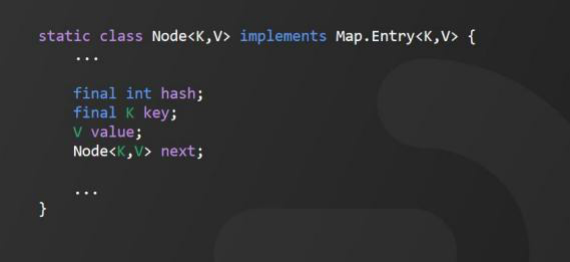
每个 Node节点，保存了用来定位数组索引位置的 hash值、Key、Value和链表指向的下一个 Node节点。而 Node类是 HashMap 的内部类，它实现了 Map.Entry接口，它的本质其实可以简单的理解成就是一个键值对。来看一下源码。
3、HashMap的工作原理
【导航条： 工作原理】
当我们向 HashMap 中插入数据时，首先要确定 Node 在数组中的位置。那如何确定 Node 的存储位置呢？ 以添加 Key为字符串“e”的对象为例：


HashMap 首先调用 hashCode()方法，获取 Key 的 hashCode值为 h。然后对 h 值进行高位运算； 将 h 右移 16 位取得 h的高 16 位，与 进行异或运算，最后得到 h 的值与 ( table.length - 1 )进行与运算获得该对象的保留位，最后计算出下标。当然，这是最官方的描述。有的小伙伴可能已经迷糊了。其实，这段运算过程，简单地理解成求模取余法。
就是用 hash 值和数组的长度减 1 ，取模，最后得到数组的下标，这样可以保证数组下标不越界。只不过，位运算是二进制运算，效率更高。
最后，来看一段动画演示，假设有“a”、“b”、“d”、“r”，“t”，“e”的 Key。通过计算得到的下标分别为 1 、2 、4 、2 、4 、5
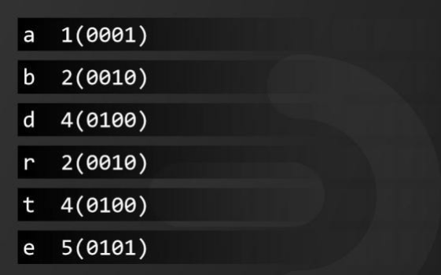
它们的插入顺序如动画所示。
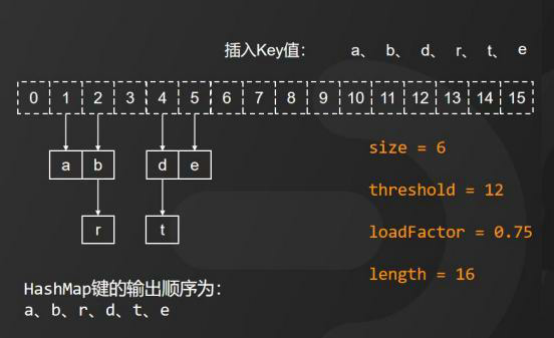
如果我们再次插入 "a"，“g”，“i”，null 四个 Key，来看HashMap 的内部变化。
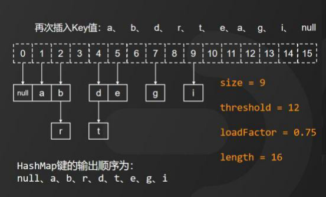
当插入第二个以 a 为 Key 的对象时，会将新值赋值给 a 的值。当插入的对象大小超过临界值时，HashMap 将新建一个桶数组并重新赋值（当然，JDK1.7 和 1.8 重新赋值的方式略有不同）
这个时候，HashMap 键的输出顺序为 null、a、b、r、d、t、e 、g、i

HashMap 的工作原理，你搞懂了吗？
我是被编程耽误的文艺 Tom ，如果大家还有其他疑问，请在评论区留言。如果本次面试对你有帮助，请动动手指一键三连分享给更多的人。关注我，面试不再难！
为什么HashMap会产生死循环？
HashMap 死循环是一个比较常见、也是比较经典的面试题，在大厂的面试中也经常被问到。HashMap 的死循环问题只在 JDK1.7 版本中会出现，主要是 HashMap 自身的工作机制，再加上并发操作，从而导致出现死循环。JDK1.8 以后，官方彻底解决了这个问题。
1、数据插入原理
在分析原因之前，我先带大家了解一下 JDK1.7 中HashMap 插入数据的原理，来看动画演示：

由于 JDK 1.7 中 HashMap 的底层存储结构采用的是数组 加 链表的方式。

而 HashMap 在数据插入时又采用的是头插法，也就是说新插入的数据会从链表的头节点进行插入。
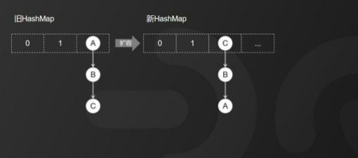
因此，HashMap 正常情况下的扩容就是是这样一个过程。
我们来看，旧 HashMap 的节点会依次转移到新的 HashMap中，旧 HashMap转移链表元素的顺序是A、B、C，而新 HashMap使用的是头插法插入，所以，扩容完成后最终在新 HashMap中链表元素的顺序是 C、B、A。
2、导致死循环的原因
接下来，我通过动画演示的方式，带大家彻底理解造成HashMap 死循环的原因。我们按以下三个步骤来还原并发场景下 HashMap 扩容导致的死循环问题：

第一步： 线程启动，有线程 T1 和线程 T2 都准备对HashMap 进行扩容操作，此时 T1 和 T2 指向的都是链表的头节点 A，而 T1 和 T2 的下一个节点分别是 T1.next 和 T2.next，它们都指向 B 节点。

第二步： 开始扩容，这时候，假设线程 T2 的时间片用完，进入了休眠状态，而线程 T1 开始执行扩容操作，一直到线程 T1 扩容完成后，线程 T2 才被唤醒。
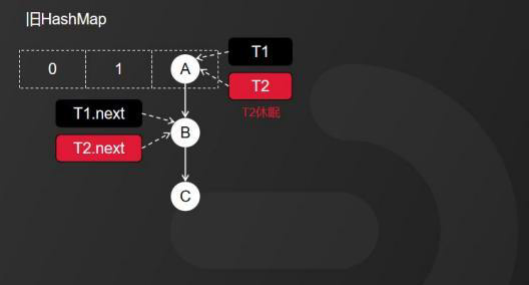
T1 完成扩容之后的场景就变成动画所示的这样。

因为 HashMap 扩容采用的是头插法，线程 T1 执行之后，链表中的节点顺序发生了改变。但线程 T2 对于发生的一切还是不可知的，所以它指向的节点引用依然没变。如图所示，T2 指向的是 A 节点，T2.next 指向的是 B 节点。

当线程 T1 执行完成之后，线程 T2 恢复执行时，死循环就发生了。

因为 T1 执行完扩容之后，B 节点的下一个节点是 A ，而T2 线程指向的首节点是 A，第二个节点是 B，这个顺序刚好和 T1 扩容之前的节点顺序是相反的。T1 执行完之后的顺序是 B 到 A，而 T2 的顺序是 A 到 B，这样 A 节点和 B 节点就形成了死循环。
3、解决方案
避免 HashMap 发生死循环的常用解决方案有三个：
1) 、使用线程安全的 ConcurrentHashMap 替代 HashMap，个人推荐使用此方案。
2)、使用线程安全的容器 Hashtable 替代，但它性能较低，不建议使用。
3) 、使用 synchronized 或 Lock 加锁之后，再进行操作，相当于多线程排队执行，也会影响性能，不建议使用。
4、总结
HashMap 死循环只发生在 JDK1.7 版本中，主要原因是JDK1.7 中的 HashMap，在头插法 加 链表 加 多线程并发 加 扩容这几个情形累加到一起就会形成死循环。多线程环境下建议采用 ConcurrentHashMap 替代。在 JDK1.8 中，HashMap 改成了尾插法，解决了链表死循环的问题。
以上就是关于 HashMap 死循环原因的分析，听懂的小伙伴，关注点个赞，下次不迷路。
94.HashMap什么时候扩容，如何扩容？
一位2 年工作经验的小伙伴面试时被问到，说，HashMap 什么时候扩容，为什么要扩容？这个问题本身不是很难，但是这位小伙伴对底层实现原理没有太多关注，所以，被这个问题难住了。
下面我给大家分析一下这个问题的底层逻辑。
1 数据存储容器
在任何编程语言中，我们经常需要在内存中去临时存放一段数据，我们可以使用官方封装好的一些集合框架。

比如说用 List、HashMap、Set 等等作为临时数据存储的容器。
当我们创建一个集合对象的时候，实际上就是在内存里面一次性申请了一块内存空间。而这个内存空间的大小是在创建集合对象的时候去指定的。

比如 HashMap 的默认大小是 16。
2 动态扩容
在实际开发过程中，我们需要去存储的数据量往往是大于存储容器的默认大小的。所以，出现容量默认大小不能满足需求时，就需要扩容。而这个扩容的动作是由集合自动完成的，每种集合的扩容规则都有差异。但总的扩容原则是，当集合存储容量达到某个阈值的时候，集合就会进行动态扩容，而更好地满足更多数据存储的需求。

而 HashMap 中，用来存储数据的容器，本质上是一个数组结构。基本的扩容逻辑就是新建一个更长的数据，然后把原来数组里面的数据 Copy 到新的数组里面就可以了。
那 HashMap 是在什么触发扩容呢？它的扩容原理是什么呢？
3 扩容原理
当 HashMap 里面的元素个数超过临界值的时候会自动触发扩容。这个临界值的计算公式如图所示：

它等于负载因子乘以容量大小，负载因子的默认值是 0.75，而容量大小默认是16,。也就是说，第 1 次扩容的动作会在元素个数达到 12 的时候触发，扩容的大小是原来的2 倍。HashMap 的最大容量是Integer.MAX_VALUE 也就是2 的31 次方减1。
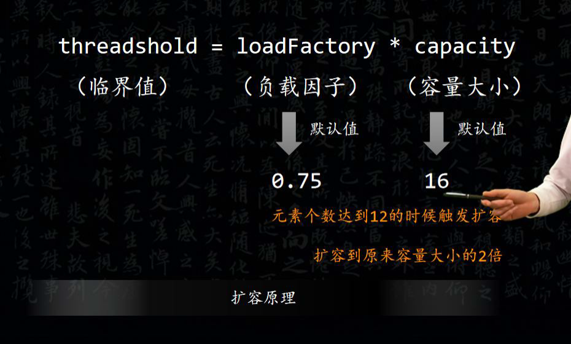
由于动态扩容机制的存在，所以我们在实际应用的时候，最好在集合初始化的时候明确去指定集合的大小，从而避免频繁扩容带来性能上的消耗。
假设，我们向 HashMap 中插入 1024 个元素，如果按照默认容量大小是 16的情况下，随着元素的不断增加，会造成至少 7 次扩容。而这 7 次扩容过程中，需要重新去创建新的 Hash 表，并且进行数据的迁移，对性能的影响是非常大的。
那为什么负载因子是 0.75，而不是其他的值呢？
3 负载因子

负载因子表示 Hash 表中的元素填充程度。负载因子的值越大，也就意味着触发扩容的元素个数就越多。虽然，它的整体空间利用率会比较高，但是 Hash冲突的概率也会增加。那么，反之，负载因子的值越小，那么触发扩容元素的个数也就越少，也就意味着 Hash 冲突的概率也会减少。但是，对于内存空间的浪费自然就比较多了，而且还会增加扩容的频率。
因此，扩容因子的值的设置，本质上就是一个冲突的概率以及空间利用率之间的一个平衡。关于 0.75 这个值的来源，和统计学里面的泊松分布有关系。
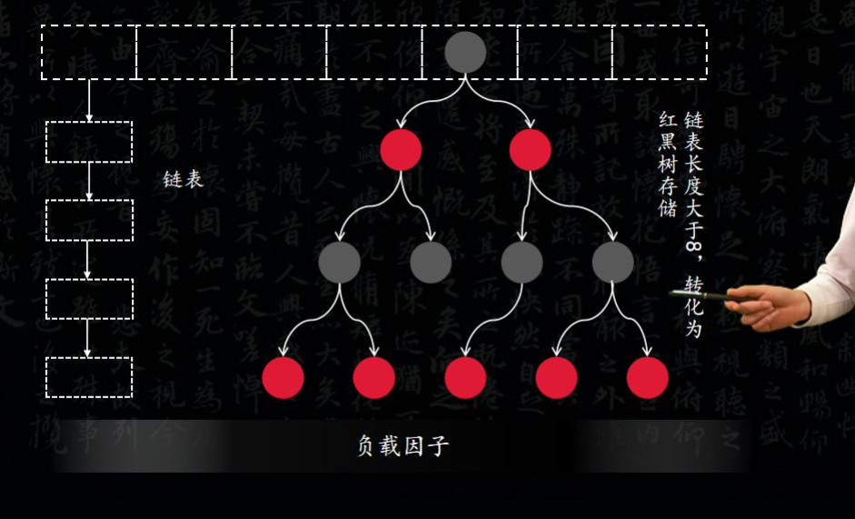
我们知道，HashMap 采用的是链式寻址的方式来解决 Hash 冲突的问题。而为了避免链表过长，导致时间复杂度增加的情况，所以，HashMap 判断链表长度大于等于 8 的时候，就会转换为红黑树，从而提升检索的效率。

当负载因子为 0.75 的时候，链表长度达到 8 的可能性几乎为0，也就是说，比较好的做到了空间成本和时间成本的平衡。
好了，以上就是我对HashMap 扩容的理解。
2、总结
最后，我把HashMap 和TreeMap的更多详细区别，都整理在这张表中了，需要的小伙伴可以在我的个人主页中获取。
| **基础 ** | **哈希图 ** | 树状图 |
|---|---|---|
| Definition | HashMap 是基于哈希表的Map接口实现。 | TreeMap 是Map 接口的基于Tree 结构的实现。 |
| Interface Implements | HashMap 实现 Map, Cloneable和 Serializable 接口。 | TreeMap 实现NavigableMap, Cloneable和Serializable接口。 |
| 空键/值 | HashMap 允许单个null键和多个null 值。 | TreeMap 不允许使用空键, 但可以具有多个空值。 |
| 同质/异质 | HashMap 允许异构元素, 因为它不对键执行排序。 | 由于排序, TreeMap 允许将齐次值作为键。 |
| Performance | HashMap 比TreeMap 更快, 因为它为诸如get()和put()之类的基本操作提供了O（1）的恒定时间性能。 | 与HashMap相比, TreeMap 速度较慢, 因为它为大多数操作（如add(), remove()和contains()）提供O(log(n))的性能。 |
| 数据结构 | HashMap 类使用哈希表。 | TreeMap 在内部使用Red-Black树, 这是一种自平衡二进制搜索树。 |
| Comparison Method | 它使用Object类的equals()方法比较键。Map类的equals()方法将其覆盖。 | 它使用compareTo()方法比较键。 |
| Functionality | HashMap 类仅包含诸如get(), put(), KeySet()等基本功能。 | TreeMap 类具有丰富的功能, 因为它包含如下功能：tailMap(), firstKey(), lastKey(), pollFirstEntry(), ollLastEntry()。 |
| 元素顺序 | HashMap 不维护任何顺序。 | 元素以自然顺序（升序）排序。 |
| Uses | 当我们不需要按排序顺序的键值对时, 应使用HashMap。 | 当我们需要按排序（升序）顺序的键值对时, 应使用TreeMap |

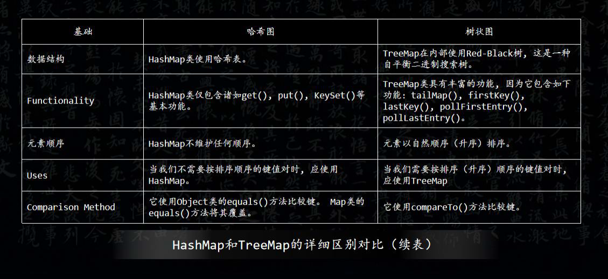
好了，以上就是我对HashMap 和TreeMap 的理解。
110.HashMap和TreeMap的区别
前几天，有一位粉丝在直播间问了我这样一个问题，说HashMap和TreeMap有什么区别。今天，我给大家分享一下我的理解。
1、两者区别
我们知道不管是HashMap还是TreeMap，都是通过对象来对对象进行索引的Map集合。我们把用来索引的对象叫做Key，而索引对应的对象叫做Value。这就是我们平时说的键值对。它们的类关系如图所示：

关于HashMap 和TreeMap的区别，我从以下4个方面来分析：
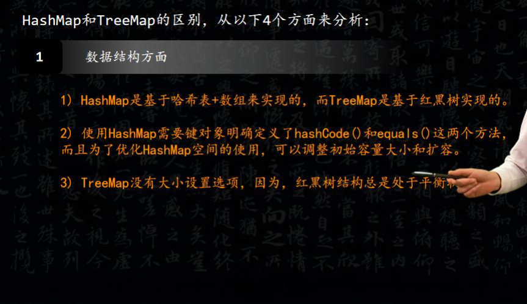
1）数据结构方面
HashMap是基于哈希表+数组来实现的，而TreeMap 是基于红黑树实现的。
使用HashMap需要键对象明确定义了hashCode()和equals()这两个方法，而且为了优化HashMap 空间的使用，可以调整初始容量大小和扩容。
TreeMap没有大小设置选项，因为，红黑树结构总是处于平衡状态。

2）效率方面
HashMap比TreeMap 的性能更高。
HashMap的时间复杂度是O（1），它是通过哈希函数计算的哈希地址。
而TreeMap主要是保证数据平衡，时间复杂度是O（log2 n）。

3）线程安全方面
HashMap和TreeMap 都是非线程安全的。
如果在多线程并发情况下建议使用ConcurrentHashMap；
如果既要保证线程安全又要保证顺序，可以使用 Collections.synchronizedMap()方法转化为线程安全的集合。

4）应用场景方面
HashMap是无序的，而 TreeMap是有序的。
TreeMap适用于按自然顺序或自定义顺序遍历键的场景。
HashMap适用于在Map中插入、删除和定位元素。
日常开发建议多使用HashMap，只有在需要排序的时候才使用TreeMap。
对 Hashtable 的了解
- 数组 + 链表方式存储
- 默认容量：11 (质数 为宜)
- put 操作
- 索引计算 :
(key.hashCode() & 0x7FFFFFFF) % table.length - 若在链表中找到了，则替换旧值，若未找到则继续
- 当总元素个数超过容量*加载因子时，扩容为原来 2 倍 加 1 并重新散列。
- 将新元素加到链表头部
- 索引计算 :
- 对修改 Hashtable 内部共享数据的方法添加了 synchronized，保证线程安全。
Hashtable的size()方法中明明只有一条语句“return count”，为什么还要做同步？
同一时间只能有一条线程执行固定类的同步方法，但是对于类的非同步方法，可以多条线程同时访问。所以，这样就有问题了，可能线程A在执行Hashtable的put方法添加数据，线程B则可以正常调用size()方法读取Hashtable中当前元素的个数，那读取到的值可能不是最新的，可能线程A添加了完了数据，但是没有对size++，线程B就已经读取size了，那么对于线程B来说读取到的size一定是不准确的。
而给size()方法加了同步之后，意味着线程B调用size()方法只有在线程A调用put方法完毕之后才可以调用，这样就保证了线程安全性。
Put和读取多线程导致的问题。
更新: 2023-12-02 23:04:05
原文: https://www.yuque.com/joyo/interview/gky3yipniq1ya6kz